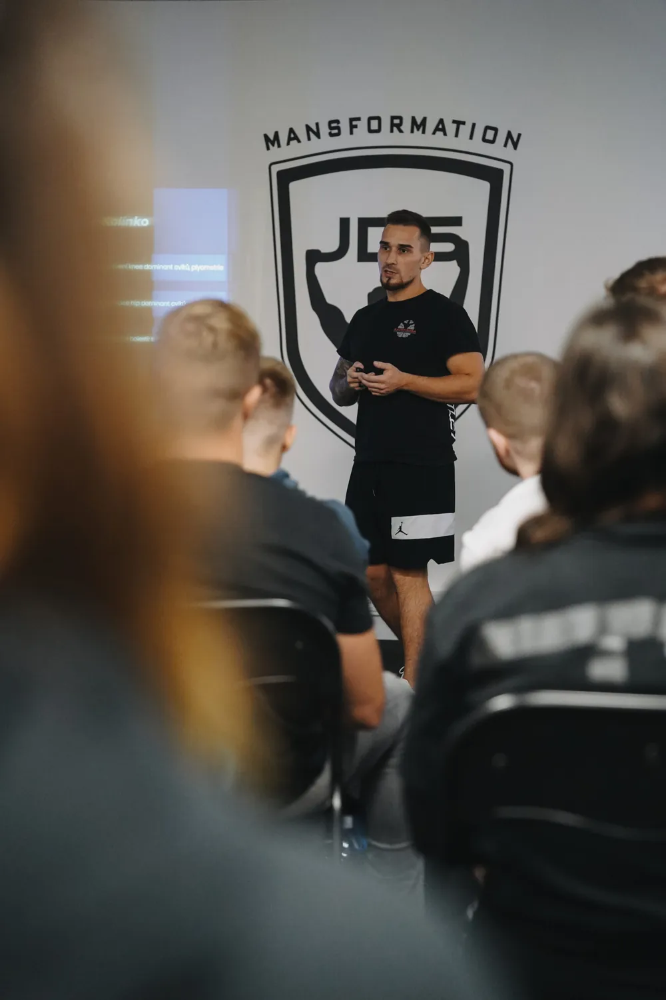
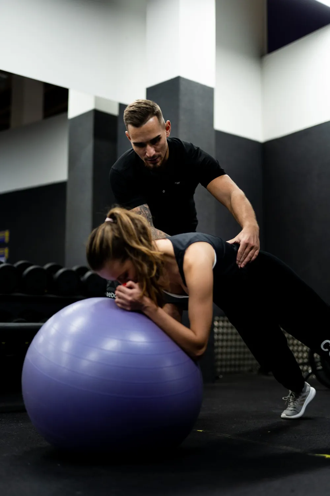
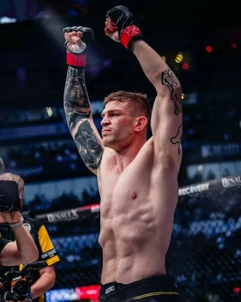
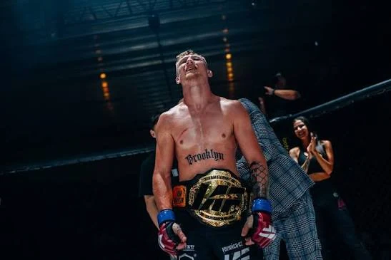
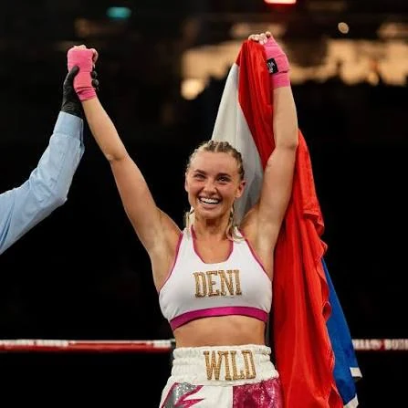
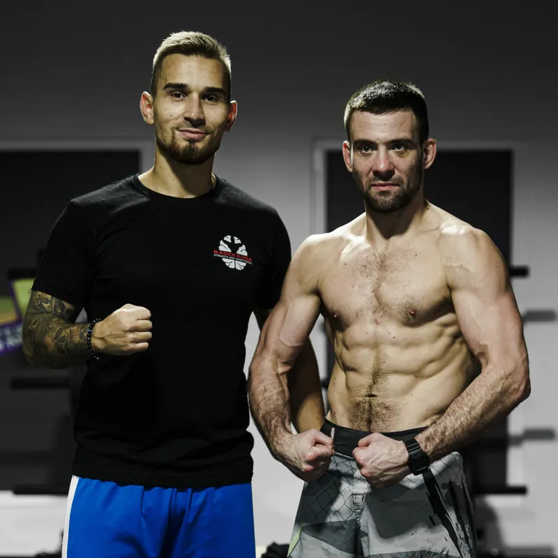
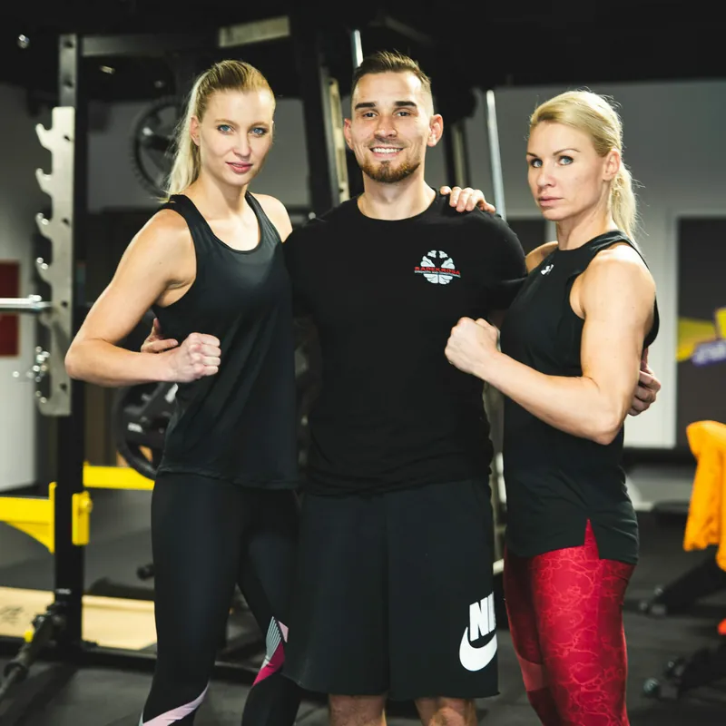
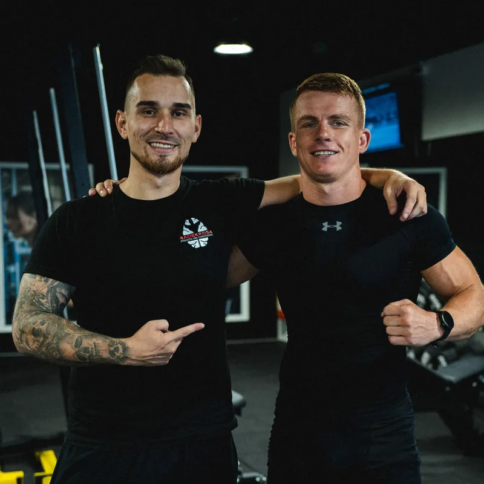
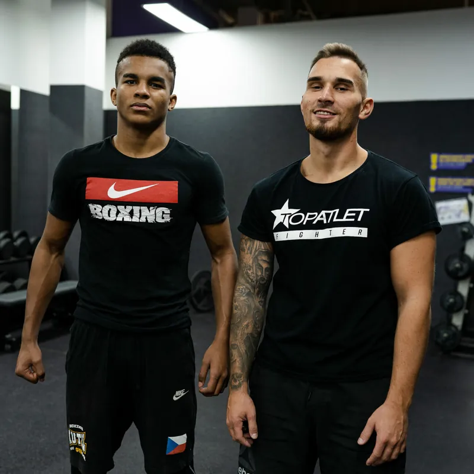

o mně
Jsem silový a kondiční trenér, který se věnuje profesionálním sportovcům i běžné populaci. Pomáhám zlepšovat sportovní výkon, snižovat tělesnou hmotnost, zbavovat bolesti, učit správné pohybové a dechové vzory a poskytovat pooperační rehabilitační péči. Nabízím také individuální online coaching, který umožňuje spolupráci na míru bez ohledu na vzdálenost.
K silovému tréninku mě poprvé přivedla příprava v rugby klubu Slavia Praha v roce 2005. Později jsem absolvoval několik zápasů podle pravidel MMA a olympijského boxu. Dnes se naplno věnuji trénování klientů, psaní edukačních publikací a pořádání vzdělávacích kurzů pro trenéry. Doposud se mých kurzů zúčastnilo více než 500 trenérů z Česka a Slovenska. Příležitostně přednáším na fakultě tělesné výchovy a sportu Univerzity Karlovy.
Jsem členem projektu TopAtlet a působím jako silový a kondiční trenér v klubu Reinders MMA. Ve snaze neustále rozšiřovat své znalosti jsem měl příležitost osobně se učit od špičkových odborníků z celého světa, jako jsou Cal Dietz, Alex Natera, Pat Davidson, Tim Gabbett a další.


moje certifikace a kvalifikace
- Daru Phil mentorship certifikace
- Ch.Thibaudeau - OCTS Principles & science
- Ch.Thibaudeau - OCTS The methods
- Ch.Thibaudeau - OCTS Programming
- THIBARMY Training systems
- Exos: Strength & Power by Dan Baker
- Adam Antmann - Hluboký stabilizační systém páteře 1.
- Adam Antmann - Hluboký stabilizační systém páteře 2.
- Coretraining.cz - Funkční stabilizace lopatek
- Sue Falsone - Shoulder webinar
- Sue Falsone - Cervical Spine webinar
- The Movement Seminar - Jakub Moravčík (fyzioterapie)
- Soukromá stáž Topatlet.cz - Teoretická a praktická výuka metod fyzické přípravy sportovců (nyní členem týmu)
- Trenérská škola Ronnie
- Martin Schmiedl - komplexní diagnostika a náprava kyčlí a pánve (fyzioterapie)
- IMV - Moderní výživa
- Tomáš Mihalík PhD. - Hamstring (Bratislava, Slovensko 2023)
- Tomáš Mihalík PhD. - Hypertrofia (Bratislava, Slovensko 2023)
- Ben Yanes - Biomechanics (webinar)
- Tomáš Mihalík PhD. - ACL (Bratislava, Slovensko 2024)
- Alex Natera - Isometric strength training (Bratislava, Slovensko 2024)
- Tim Gabbett - Training performance puzzle (Krakow, Polsko 2024)
- Dr. Pat Davidson - RTBP (Bratislava, Slovakia 2024)
- IMV - Československá evidence-based konference o výživě
- Zdravoafit- (4.) Mezinárodní sportovní konference
- Oxygen Advantage - Movelab
- Oxygen Advantage - Colliery Academy
- FTVS Mgr.Jan Padecký “Evidence-based seminář”
- Martin Schmiedl – komplexní diagnostika a náprava ramene (fyzioterapie)
- Zdravoafit- (5.) Mezinárodní sportovní konference
- Ch.Thibaudeau – Hypertrophy cornerstone
- Landmine University workshop – Movelab
- EXOS: The applied neuroscience of peak performance
- Velocity based training – Jan Padecký a Radek Gwudz
- Science of sport: ACL rehab
- Science of sport: Elite vertical performance (Overtime Athletes)
- Kabuki education week
- Thibarmy - Movement optimalization specialist
- Thibarmy - Fast twich fibers
- Neurovizuální trénink - dynaoptic
- RPR system lvl 1,2,3
- Cal Dietz - Results-based training (Hennef, Německo 2023)
- Luis Mesquita - Bridging the Gap in Speed and Agility Development (Krakow, Polsko 2023 + Hradec Králové, CZE 2024)
- Isometric Strength Training - Alex Natura (Sportsmith)
- Pohybový rozvoj dětí - Mgr. Adam Rybář (Praha 2024)
- Jordan Shallow - The prescript intense (Brno 2024)
- A mnoho dalšího... :)
galerie fotek


Moji klienti

Lukáš Hudler
WAKO & ENFUSION World Champion

Pavel Polakovič
WBC CISBB CHAMPION

Miloš „Meloun“ Petrášek
Zápasník Oktagon MMA

Andre Reinders
Head coach Reinders MMA

David Zoula
Šampion IAF

Denisa Novák Válová
vicemistryně ČR v boxu

Josef Stráník
Boxer organizace Patron boxing

Julie Přibylová

Patrik Kutil
Mistr Evropy IMMAF

Filip Macek
Zápasník Oktagon MMA

Petra Částková (vpravo)
Zápasnice Bellator MMA

Jakub Dohnal
Zápasník Oktagon MMA

Kelvin Soquessa
Šestinásobný mistr ČR v boxu
Další klienty zobrazíš posunutím galerie
videa se mnou
Co o mně moji klienti řekli?
"S Radkem pracuji druhým rokem formou online coachingu a musím říct, že jsem hodně spokojeny. Má profesionální přístup a velke znalosti daného sportu. 👍"
"S Radkem uz nejakou dobu spolupracuji a musim rict, ze svou praci dela dobre a jde videt, ze ji miluje. Opravdu se o sve klienty zajima a spoluprace nekonci jen ve fitku. Hodne mi pomohl s rehabilitaci po operaci kolene a ma velkou zasluhu na mem navratu do vrcholoveho sportu."
"Na Radka jsem se obrátil po operaci (ACL) kolene s prosbou, že bych se rád vrátil k fotbalu. Po celou dobu Radkovi naprosto se vším co děláme důvěřuji a nyní už se pomalu opět vracím na trávník. Lidský a kamarádský přístup je velmi příjemný a na tréninky chodím rád! Mohu jen doporučit!"
"Ve svém malinko vyšším věku jsem se rozhodla udělat vše pro své tělo ať ze zdravotního ,tak vzhledového hlediska ,aby to bylo k mé spokojenosti.Vybrala jsem trenéra Radka a nemohla jsem udělat lépe.Lidskost,profesionalita,vstřícnost a obrovská trpělivost 😊Děkuju ,že to semnou nevzdáváte trenére"
"Radek je skvely trener, ktery svou praci dela naplno a s laskou. Neustale se vzdelava a je videt, ze sve praci velmi rozumi. Kazdy trenink vymysli neco noveho, zameruje se na cil, ktery jsme si na zacatku nasi spoluprace stanovili a krome skvele pripravenych treninku umi i dobre motivovat a je s nim legrace. Na pravidelnem cviceni s Radkem jsem uz zavisla 🤩💪🏻. Takoveho trenera mohu jen doporucit 👏🏼😊💪🏻."
"Dlouuho jsem se přemlouval ke cvičení, nevěděl jsem kde ,jak začít, Radka znám par let. Za tu dobu ušel kus cesty a když sem to viděl, cítil sem ze mi pomůže s moji cestou. A to se taky stalo! Velká sranda, ale pozor, pěkně přisnej umí být😁Dostane z Vás maximum. Sem vděčný , s nim trénovat a travit čas. Diky"
Kontakt
Kontaktuj mě, pokud máš zájem o trénink!